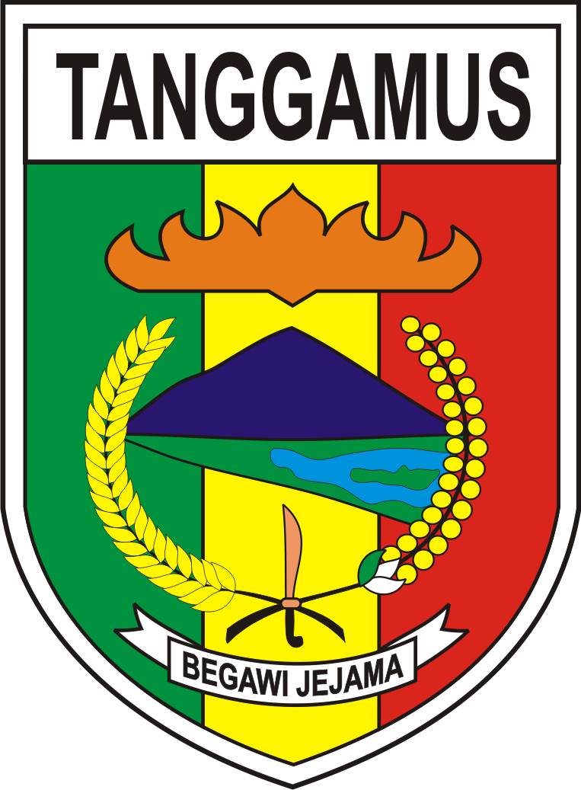

Simulator Peran PRD (UTS 2026)
Ganti peran dengan satu klik untuk menguji hak akses:
👁️ Pengunjung
🛒 Pembeli (Budi Santoso)
⚓ Penjual Terverifikasi (Toko Bahari)
⏳ Penjual Baru (Menunggu Verifikasi)
🏛️ Admin Pemda (Rifki Banda)
🔄 Reset Data
📍 Wilayah Pemasaran:
Kabupaten Tanggamus, Lampung
(Kota Agung, Teluk Semaka, Gisting, Limau, Cukuh Balak)
Status MVP:
Katalog & Pemesanan Hasil Perikanan (Rust + PostgreSQL)

SMART
FISHERY
Sistem Informasi Pemasaran & Pemesanan Hasil Perikanan Kab. Tanggamus
Beranda
Katalog Produk
0
Masuk / Daftar